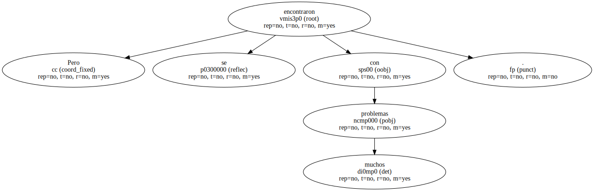
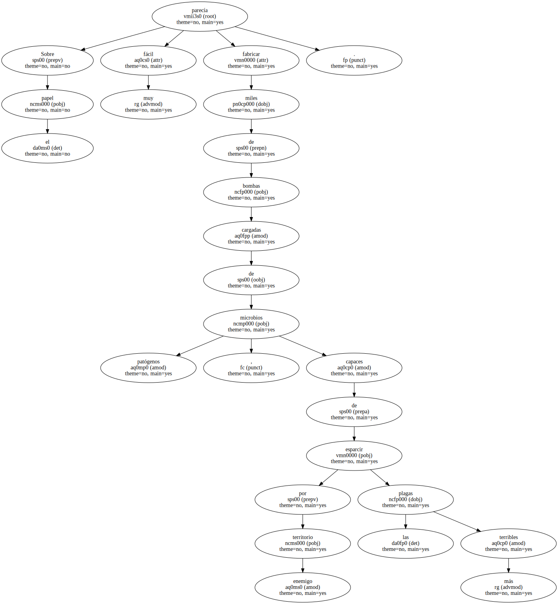
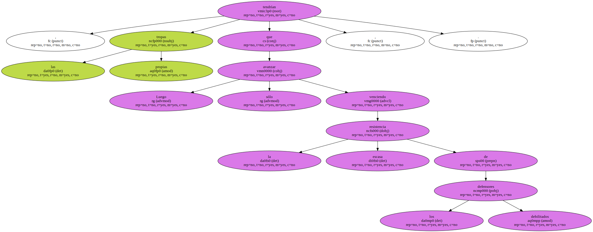
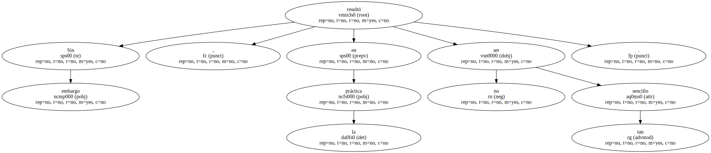
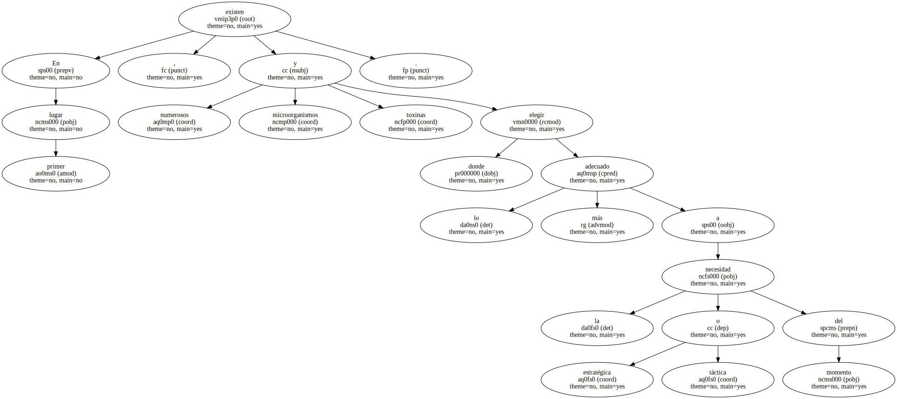
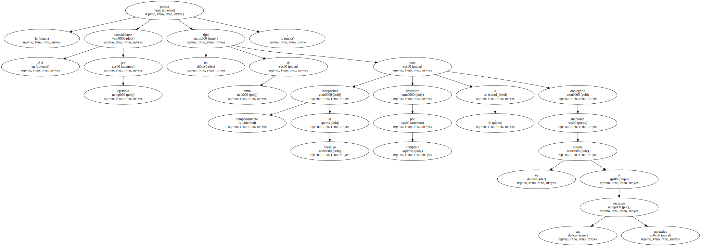
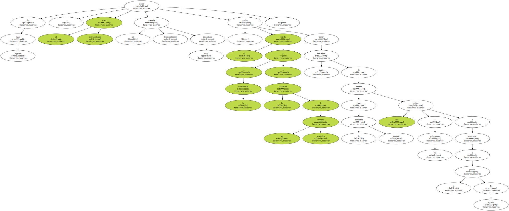
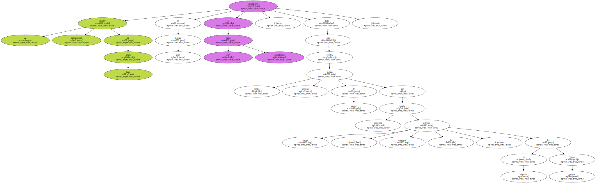
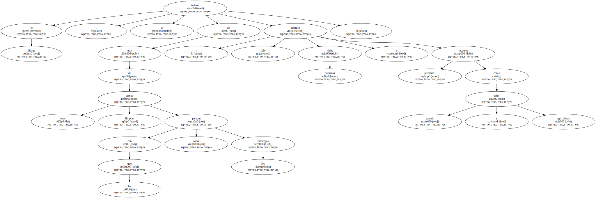

Pero se encontraron con muchos problemas.
Sobre el papel parecía muy fácil fabricar miles de bombas cargadas de microbios patógenos , capaces de esparcir por territorio enemigo las más terribles plagas.
Luego , las tropas propias sólo tendrían que avanzar , venciendo la escasa resistencia de los debilitados defensores.
Sin embargo , en la práctica resultó no ser tan sencillo.
Las presuntas ventajas de las armas biológicas gravitan sobre tres puntos fundamentales.

En primer lugar , existen numerosos microorganismos y toxinas donde elegir lo más adecuado a la necesidad estratégica o táctica del momento.
Así por ejemplo , podría considerarse un tipo de arma para incapacitar temporalmente al enemigo , destruirle por completo o doblegarle mediante el ataque a sus recursos naturales.
En segundo lugar , el arma microbiológica posee un potencial desmoralizador muy importante : el miedo a la enfermedad y a la saturación de los servicios sanitarios pueden crear fuertes corrientes de opinión entre la población atacada que obligue a sus gobernantes a someterse a la presión del agresor.
Al carácter imperceptible de tales armas contribuye en gran medida a este efecto psicológico , dado que existen tantas formas posibles de ataque que resulta imposible prever y organizar la defensa , ni siquiera de forma pasiva.
Por último , se trataría de una de esas armas limpias con las que parecen soñar los estrategas : sólo destruye vidas humanas y recursos primarios tales como ganado y agricultura.
